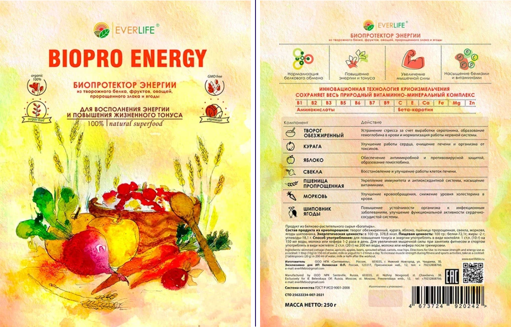
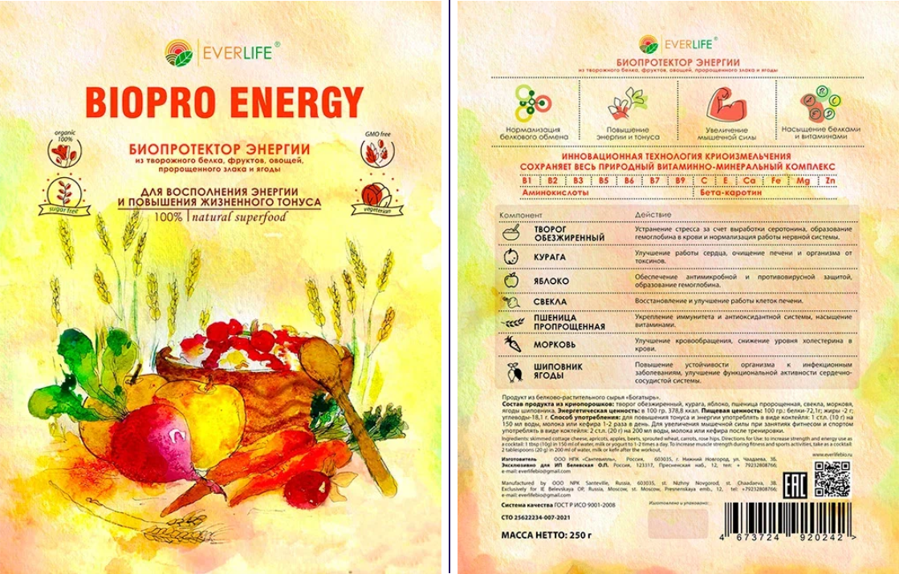

Innovative food products of preventive and curative action
We offer EverLife, ready-made vitamin and mineral complexes of preventive and curative action with a unique formulation developed by nutritionists. These complexes are prepared using innovative cryogenic crushing technology.
LLC "SME INNOVATIONS" is the official partner for the export and promotion of EverLife products in the CIS countries, India, Southeast Asia, North America and Europe.

Unique cooking technology
Vegetables, fruits, berries, and grains are processed along with their skins and seeds. This greatly increases the value of the final product in terms of the content of biologically active substances.
The use of critically low temperatures during product preparation allows you to increase the shelf life up to 18 months without preservatives.
Synthetic substances are NOT used throughout the entire production cycle.
The temperature regime of storage is unlimited, which allows the product to be used both in conditions of polar cold and in very hot climatic zones.
Unique cryopreservation technology
The products are prepared in the form of hermetically packaged dry vitamin and mineral powders for fast preparation of drinks with high biological activity.
Vegetable raw materials are used for cooking, traditionally eaten and grown in ecologically clean regions of Russia and the CIS.
The patented (21 patents) technology of critically low temperatures and special grinding is used, which preserves biologically active substances in the feedstock as much as possible and increases their bioavailability.
The concentration of biologically active substances increases by 8-12 times, and the degree of assimilation reaches 100%.
The color, taste and smell of the raw materials are completely preserved in the mixtures.
Innovative vitamin and mineral complexes solve nutritional problems:
01
Radionuclides, heavy metal salts, pesticides, microorganisms, etc. are removed from the body. substances foreign to the human body, which are saturated with modern food and air.
02
They make up for the deficiency of natural vitamins, trace elements, etc. bioactive substances.
03
They make up for the lack of fiber in the diet, and this stimulates the work of the intestines, cleanses the body of toxins and prevents constipation.
04
They enrich the daily diet with a variety of plant foods, which is very difficult to do in the conditions of the rhythm of modern human life.
05
They prevent the development of age-related diseases: diabetes mellitus, oncology, osteoporosis, dementia, etc.
Proven clinical effects:
- Saturation of the body with vitamins and minerals
- Enterosorption activity (sorption in the intestine and elimination of toxic substances from the body, including heavy metal salts)
- Lowering blood glucose and cholesterol levels
- Improvement of water-salt metabolism
- Improvement of the functional state of the cardiovascular and digestive systems
- Increased visual acuity
- Strengthening the immune system
- Increasing the adaptive resources of the body
- Improvement of the psycho-emotional state
- Sustained weight loss
- Improving athletic performance
Absence of contraindications and side effects
- An environmentally friendly and safe product. 100% natural ingredients, subjected to careful research at all stages of processing.
- The formulation of the products was developed by scientists and nutritionists. A person receives a full-fledged composition of natural vitamins and minerals to strengthen and restore health.
- Functional cellular nutrition products with the highest degree of assimilation up to 100% due to the weakening of molecular bonds. This allows you to get all the necessary active substances from food, regardless of the problems and disorders in the digestive system that prevent the proper digestion and assimilation of food.
- Concentrated instant food. It is only necessary to dilute in water, milk and any sour-milk product. The concentration of nutrients in 1 tsp., as in 3 kg. fresh food.
- Biocorrectors with concentrated natural milk protein in biologically active form work as a natural immunomodulator and increase the body's resistance to physical and emotional overloads.
- Foods with a high content of dietary fiber and pectin substances. They have high sorption activity and neutralize harmful food impurities.
Achievements and international recognition
160
clinical trials
150
PhD dissertations
10
doctoral dissertations
200
scientific publications
35
gold and silver medals at Russian and international exhibitions and forums.
BIOPRO ENERGY
 



Vitamin and mineral complex for cleansing from parasites "ANTIPARASITEL"
- Antiparasitic and antimicrobial effects
- Elimination of toxic substances from the body
- Increasing the protective forces of the lining of the gastrointestinal tract
- Increase of general immunity
Vitamin and mineral complex for improving the mucous membrane of the stomach and intestines "BIO-COCKTAIL Oats & Apple"
- Reduction of inflammation in gastritis
- Healing of ulcers and erosions of the stomach and duodenum
- Increased hemoglobin levels in the blood
- Anemia treatment
Vitamin and mineral complex for energy replenishment and vitality "BIOPRO ENERGY"
- Normalization of protein metabolism
- Increased energy and tone
- Increase in muscle strength
- Protein and vitamin saturation
Vitamin and mineral complex for women's beauty and youth "CHARMER"
- Increasing the density and elasticity of hair
- Strengthening nails
- Skin rejuvenation and cleansing
- Wrinkle smoothing, lifting effect
Vitamin and mineral complex for improving mental and physical performance "MERISTEMA"
- Normalization of body weight and tone
- Cleansing the intestines and getting rid of constipation
- Increased immunity and hemoglobin
- Improvement of skin, hair and nails
Vitamin and mineral complex for strengthening the immune system "IMMUNACTIVE"
- Increased immunity
- Anti-inflammatory and antimicrobial action
- Prevention of colds and their treatment
- Strengthening antioxidant protection -oncoprophylaxis
Vitamin and mineral complex for powerful detoxification of the body "GREEN DETOX"
- Cleansing and rejuvenation of the body
- Alkalinization of the body's internal environment
- Saturation with vitamins and minerals
- Cancer prevention